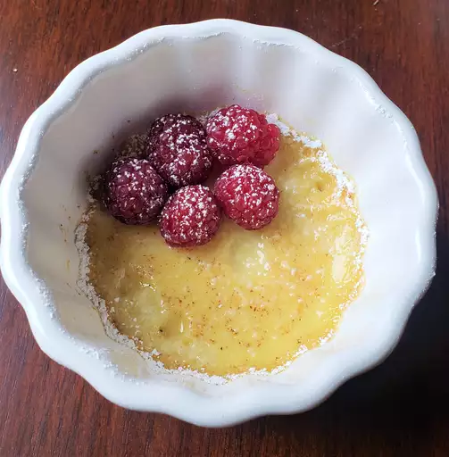

Jelly Custard

Desciption
This is a very standard Jelly and Custard dish. A childhood favourite for me
Ingredients
- 1 packet Jelly powder
- 1 satchet Custard powder
- 500ml Milk
- 300ml warm Water
- 2 Tbs Sugar
Steps
- Mix Water, Jelly and Sugar into a bowl
- Allow 30min in freezer to solidify
- Mix Milk, Custard and Sugar
- Bring to boil stiring continuously
- Serve cooled Custard on top of chilled Jelly